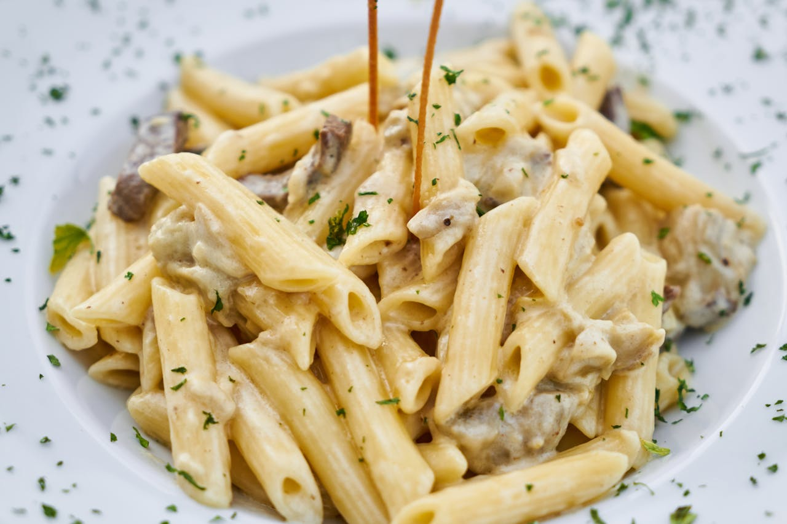

Pesto Pasta

Description
Prepare a quick, vibrant, and incredibly flavourful classic with this pesto pasta dish, perfect for a satisfying
weeknight meal. It combines perfectly al dente pasta with a fresh, aromatic basil pesto, often brightened with
juicy cherry tomatoes and a generous sprinkle of Parmesan cheese. It's simple, bursting with Mediterranean
flavours, and sure to become a favourite.
---
Ingredients
- 300g pasta (e.g., spaghetti, linguini, fusilli)
- 200g cherry tomatoes, halved
- 50g Parmesan cheese, freshly grated (plus more for serving)
- Salt for pasta water
For the Pesto (Homemade - or use 180g jarred pesto):
- 60g fresh basil leaves
- 30g Parmesan cheese, grated
- 30g pine nuts
- 2 cloves garlic
- 60ml extra virgin olive oil
- Pinch of salt and black pepper
---
Steps
- Cook the Pasta: Bring a large pot of salted water to a rolling boil. Add the pasta and cook according to
package instructions until al dente.
- Prepare Homemade Pesto (if not using jarred): While the pasta cooks, combine basil, Parmesan, pine nuts, and
garlic in a food processor. Pulse until finely chopped. Gradually drizzle in the extra virgin olive oil
while pulsing until a smooth sauce forms. Season with salt and pepper to taste. (If using jarred pesto, skip
this step).
- Combine and Serve: Once the pasta is cooked, reserve about 100ml of the pasta cooking water, then drain the
rest. Return the drained pasta to the pot.
- Add the pesto (homemade or jarred) to the warm pasta. Toss well to coat.
- If the sauce seems too thick, add a little reserved pasta water, one tablespoon at a time, until it reaches
your desired consistency.
- Stir in the halved cherry tomatoes.
- Serve immediately, garnished with extra grated Parmesan cheese.
Home